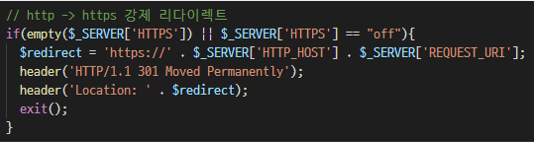

목차
SEO 진행과정에서 이어지는 글입니다.
이 글의 순서는 다음과 같아요.
그러면, 시작할게요.
이제 본격적으로 홈페이지 소스코드 수정을 시작하게 됐습니다. 홈페이지 개발이 완료된지도 꽤 오래됐고, 무엇보다 해당 개발업체에서 사용하는 솔루션 자체도 표준에서 많이 벗어나있었기 때문이죠. 그래서 단순히 메타태그 몇 줄 추가하기보다는 , 웹페이지 구조를 변경해야겠다고 인식했습니다.
그리고 그 첫단계가 바로 SSL 인증서 적용이었습니다.
SSL 인증서가 적용되지 않은 웹페이지의 경우, URL 앞에 https를 붙여 접속하면, 브라우저는 보안이 취약한 페이지라고 인식합니다. 인증서가 잘못됐다고 인식하거나, 잘못된 보안이 이루어지고 있다고 판단하는 셈이죠. (정확한 정의는 웹 보안 하시는 분들께 물어보셔요)
반대로, SSL 인증서가 적용된 웹페이지를 http로 접속할 수도 있습니다. 사용자가 스스로 보안을 포기하고 접속하겠다고 선언했기 때문이죠. 다만, 해당 웹페이지의 관리자는 사용자가 http로 접속할 경우, 해당 사용자를 https 페이지로 안내합니다. 그리고 웹브라우저에는 301 Redirect라는 상태 코드를 반환하죠. 즉, 사용자가 찾고 있는 웹페이지의 주소가 옮겨졌으니 그 곳으로 안내하겠다는 뜻입니다.
그런데 이 과정을 적용하기 위해서는, 메츠 홈페이지의 모든 화면에 리다이렉트 기능을 적용해야합니다. 그나마 다행이라면, 모든 웹페이지에서 공통으로 사용하는 웹페이지가 있었죠. 바로 Footer입니다. 하지만 이 과정에도 문제가 있었습니다. 301 코드는 웹페이지 로딩 전에 전달돼야하는데, Footer까지 로딩이 완료된 이상 이미 정상적인 웹페이지라고 인식돼버렸어요.
다행히 저희 홈페이지는 MVC 디자인패턴을 충실하게 적용하여 제작됐고, 그래서 컨트롤러에 해당하는 php 코드를 금방 찾을 수 있었습니다. 그리고 301 리다이렉트 관련 코드를 몇 줄 추가했습니다.

이제 모든 URL을 https로 접속할 수 있을 뿐만 아니라, http로 접속할 경우에도 자동으로 https로 전환되고, 해당 전환은 오히려 SEO 점수를 높여주게 됩니다.
참고로, 컨트롤러를 통한 301 리다이렉트가 아니라 View 단에서 JavaScript 등으로 302 리다이렉트를 할 경우, SEO에 오히려 악영향을 줍니다. 네이버 웹마스터 가이드를 확인해보세요.
여기까지 진행한 뒤에, 네이버와 구글 웹마스터 툴을 사용하여, 홈페이지 내 모든 게시물에 대해 수집 요청을 던졌습니다. 이렇게 해야지 네이버와 구글 검색에서 제대로 표시되기 때문이죠.
그런데, 그러지 말아야했습니다. URL을 좀 더 깔끔하게 다듬고 던져야했죠. 저는 그 사실까지는 모르고, 그냥 주말동안 편히 쉬고 돌아왔습니다.
처음 네이버 웹마스터에 등록한 뒤, 웹표준 순위가 상위 80%였다고 했죠? 이때 확인해보니 상위 40%까지는 올라갔더라고요. 의아했습니다. 그래서 아예 검색엔진에 메츠의 URL만 따로 검색해봤죠.
아니나다를까, 동일한 콘텐츠가 여러 건 등장할뿐만 아니라(URL이 다르나 동일한 페이지), 해시태그 검색 화면과 오류화면까지 검색엔진에 표시되고있었죠. 심지어, 개발사에서 테스트를 위해 임시로 구성한 페이지까지 검색엔진에 나타나고 있었습니다. 당시 웹페이지의 구조가 get 방식으로 파라미터를 받아오고 있었기 때문입니다. 그래서 아무 파라미터나 넣어서 검색해도 검색엔진이 보기에는 정상적인 페이지가 표시됐습니다.
저는 이때부터 오기가 생겼습니다. 이왕 컨트롤러를 건드린 김에, 아예 본격적으로 중복 URL을 제거하기로 합니다.
모델(Model) 수정도 했냐고요? 조금만 기다려보세요. 오픈그래프 작업 하면서 콘텐츠 DB 구조까지 수정한 이야기도 곧 나옵니다.
get 방식으로 서버(WAS)에 파라미터를 전달하여 콘텐츠를 받아오는 방식을 간단히 설명하면 다음과 같습니다.
https://페이지URL?카테고리=모션&게시물번호=1234&검색키워드=UX디자인
물음표(?)를 기준으로 URL을 나누고, 앞부분은 기본주소, 뒷부분은 상세 콘텐츠를 찾아오게되죠. 이 구조를 분석하면 아래와 같습니다.
접속 방식 : SSL 적용된 http
접속할 페이지 : 페이지URL
카테고리 : 모션
게시물 번호 : 1234
내부 검색에 사용한 키워드 : UX디자인
그런데 재미있는 점은, 여기서 카테고리와 검색키워드 부분은 없어도 동일한 게시물이 표시됩니다. 왜냐하면 게시물 번호는 각각 고유하며, 여기서 고유번호는 1234번이기 때문입니다.
그런데 재미있는 점은, 여기서 카테고리와 검색키워드를 지워도 동일한 게시물이 표시됩니다. 왜냐하면 개별 게시물은 각각 고유한 번호를 가지고있기 때문입니다. (예시로 든 주소는 1234번 게시물입니다.)
게다가, 카테고리를 전기콘센트로 바꾸고, 검색키워드를 멀티탭으로 바꿔도, 게시물번호가 1234인 이상 동일한 게시물이 표시됩니다. 하지만 해당 게시물을 감싸는 메뉴(GNB 위치, 게시물 내 Depth 표시영역 등)는 매우 이상하게 표시되죠. 이 상황을 해결하는 방법은 의외로 간단했습니다.
홈페이지 내에서 특정 게시물에 진입하는 경우, 무조건 지정한 URL로만 진입하도록 변경했습니다. 기존 홈페이지는 썸네일+제목이 카드 형식으로 나열된 UI였는데요, 각 카드의 a 태그는 현재 사용자가 접속중인 카테고리를 기준으로 정의됐습니다. 이 부분을 아예 DB와 연동하여, 이 카드는 원래 어떤 카테고리의 게시물인가를 기준으로 a 태그 내 링크를 설정하도록 변경했죠.
그리고 각 게시물 메타태그에 표준 버전 정의를 넣어서, 검색엔진이 참고하도록 했습니다.
사실 이렇게 수정하는 과정에서 홈페이지가 몇 번 죽을 뻔 했는데요,
당연히 저는 로컬에 환경을 구성해서 작업했습니다.
CentOS는 위대합니다.
이야기가 길어지니 한 번만 더 끊고 가겠습니다. 마지막 이야기는 바로 오픈그래프 프로토콜과 사이트맵입니다.
그러면, 다음 글에서 만나요!